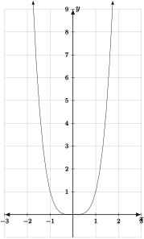
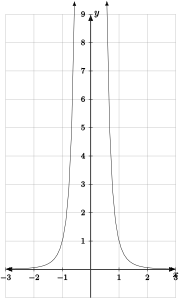
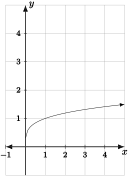

Recognize and predict the shapes of graphs of power functions depending on the coefficient and exponent.
Subsection5.4.1Introduction to Power Functions
The last basic family of functions we study, power functions, will also be a two-parameter family.
Definition5.4.1.Power Function.
A power function is one of the form
\begin{equation*}
f(x) = kx^{p}.
\end{equation*}
We call \(k\) the coefficient of the power function and \(p\) the exponent. There are no restrictions placed on \(k\) and \(p\text{;}\) they can be any constant.
Checkpoint5.4.2.
Identify the exponent and the coefficient in the power expression \(\displaystyle \left( \frac{1}{ 3 \sqrt{x} } \right)^{7}\text{.}\)
Exponent =
Coefficient =
Checkpoint5.4.3.
Are the functions given below power functions?
\(\displaystyle y = x^3 / 2\)
\(\displaystyle y = 14x^{12}\)
\(\displaystyle y = \sqrt{4x^4}\)
\(\displaystyle y = 2 / (x^3)\)
\(\displaystyle y = 12 \cdot 14^x\)
\(\displaystyle y = 3x^3 + 2x^2\)
Power functions often occur in the context of proportionality. We say one quantity is proportional to another if the first is a constant multiple of the second. Hence, if we say \(y\) is proportional to \(x^p\text{,}\) then there is some constant \(k\) such that
\begin{equation*}
y=kx^p.
\end{equation*}
Thus, \(y\) is related to \(x\) via a power function. The number \(k\) is called the constant of proportianality. We say \(y\) is inversely proportional to \(x^p\) if
When an aircraft takes off, it accelerates until it reaches its takeoff speed \(V\text{.}\) In doing so it uses up a distance \(R\) of the runway, where \(R\) is proportional to the square of the of the takeoff speed. If \(V\) is measured in miles per hour and \(R\) is measured in feet, then \(0.164\) is the constant of proportionality. If an aircraft has a takeoff speed of about \(200\) miles per hour, how much runway does it need?
feet
Question5.4.5.
What conditions on \(k\) and \(p\) would place a power function into one of the other families of functions we have studied (list all possibilities)? Explain.
Question5.4.6.
Are there any values of \(k\) and \(p\) such that a power function could be called an exponential function? Explain.
While the class of power functions still only has two parameters, we will see they are somewhat more complicated than the families of linear and exponential functions. Power functions can have a much wider array of graphs and may exhibit more complicated domains and ranges than linear or exponential functions. However, much of the complication can be worked out by remembering our rules of arithmetic.
Their coefficients are all equal to one. Their exponents are \(4\text{,}\)\(-4\text{,}\) and \(\frac{1}{4}\text{,}\) respectively. The simplest of these to graph is \(f\text{:}\)

Figure5.4.7.The graph of \(y=f(x) = x^4\text{.}\)
We see from the graph that \(f(x) = x^4\) is similar in shape to \(y = x^2\text{.}\) The outputs are never negative because the exponent is even, and the minimum output is zero. We see that the outputs grow more rapidly than those of \(y = x^2\) when \(|x|>1\) and decay to zero more rapidly when \(|x|<1\text{.}\) This is simply a result of repeating the multiplication of \(x\) by itself four times instead of two. As the exponent grows, this effect is exaggerated.
A slightly more complicated graph is that of \(g(x)\text{:}\)

Figure5.4.8.The graph of \(y=g(x) = \frac{1}{x^4}\text{.}\)
In this graph, we never see negative outputs because the exponent is even. However, we also never see zero as an output because a fraction is only zero when its numerator is zero at the same time its denominator is not zero. The most conspicuous behavior of this function is that as \(|x|\) gets large, \(g(x)\to 0\) and as \(|x|\) gets close to zero, \(g(x)\to \infty\text{.}\) This is a simple consequence of arithmetic; if you divide by a large number, the result is small and if you divide by a positive number very close to zero, the result is very large.
Finally, we can graph \(h(x) = x^{\frac{1}{4}}\text{:}\)

Figure5.4.9.The graph of \(y=g(x) = x^{\frac{1}{4}}\text{.}\)
In this graph we notice that the domain is only non-negative \(x\)-values. This is because even roots of negative numbers are not defined. Also, even roots of numbers are defined to be positive, so the range is all \(y \geq 0\text{.}\) The shape of the graph can be seen by noting that if \(y=x^{\frac{1}{4}}\text{,}\) then \(x=y^4\text{.}\) This means that the graph of \(y=x^{\frac{1}{4}}\) is that of the positive half of \(y=x^{4}\text{,}\) but reflected across the line \(y=x\text{.}\)
to generate graphs of \(f(x) = x^{3}\text{,}\)\(g(x) = x^{-3}\text{,}\) and \(h(x) = x^{\frac{1}{3}}\text{.}\) What is the main difference between these graphs and the graphs given above, and how can you explain the difference in terms of basic arithmetic?
Question5.4.11.
For each of the following conditions on \(k\) and \(p\text{,}\) sketch a rough graph of \(f(x) = kx^{p}\text{.}\) Explain why your graph looks the way it does with one or two sentences, and also give the domain and range of the function.
\(k>0\text{,}\)\(p\) is a positive odd integer.
\(k<0\text{,}\)\(p\) is a negative odd integer.
\(k>0\text{,}\)\(p\) is \(\frac{1}{n}\) for an odd integer \(n\text{.}\)
\(k<0\text{,}\)\(p\) is a negative even integer.
Checkpoint5.4.12.
The number of species, \(N\text{,}\) on an island as a function of the area, \(A\text{,}\) of the island is \(N = k \sqrt[3]{A}\text{.}\)
(a) What is the exponent of this power function?
\(p\) =
(b) Assuming the constant \(k\) is positive, which graph A-D best matches the graph of this power function?